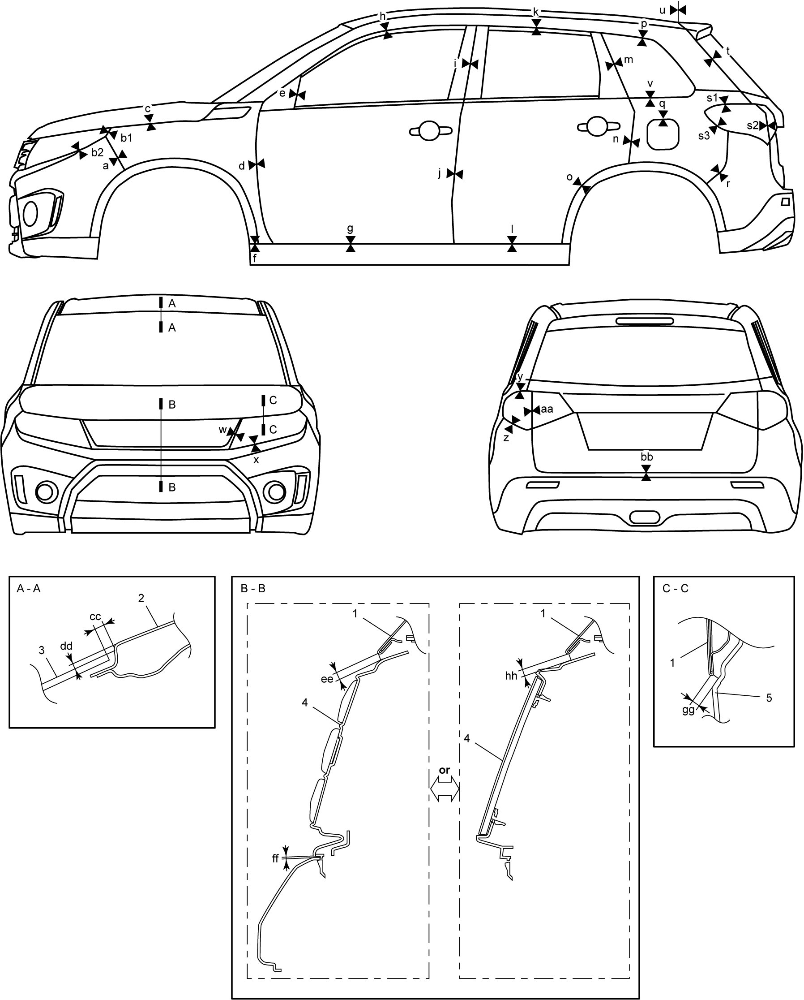

9K
| Panel Clearance |

 "Expand image")
| 1. | Hood | i: | 4.0 ± 1.0 mm (0.157 ± 0.039 in.) | u: | 5.2 +1.0, 0 mm (0.204 +0.039, 0 in.) |
| 2. | Roof panel | j: | 4.0 ± 1.0 mm (0.157 ± 0.039 in.) | v: | 3.8 ± 1.0 mm (0.149 ± 0.039 in.) |
| 3. | Windshield | k: | 6.1 ± 1.0 mm (0.240 ± 0.039 in.) | w: | 3.0 ± 1.0 mm (0.118 ± 0.039 in.) |
| 4. | Radiator upper grille | l: | 6.4 ± 1.0 mm (0.252 ± 0.039 in.) | x: | 1.5 ± 1.0 mm (0.059 ± 0.039 in.) |
| 5. | Headlight | m: | 6.0 ± 1.0 mm (0.236 ± 0.039 in.) | y: | 1.5 ± 1.0 mm (0.059 ± 0.039 in.) |
| a: | 0.5 ± 0.5 mm (0.020 ± 0.020 in.) | n: | 4.2 ± 1.0 mm (0.165 ± 0.039 in.) | z: | 1.5 ± 1.0 mm (0.059 ± 0.039 in.) |
| b1: | 1.5 ± 0.7 mm (0.059 ± 0.028 in.) | o: | 4.0 ± 1.0 mm (0.157 ± 0.039 in.) | aa: | 4.5 ± 1.0 mm (0.177 ± 0.039 in.) |
| b2: | 1.5 ± 0.7 mm (0.059 ± 0.028 in.) | p: | 5.3 ± 1.0 mm (0.208 ± 0.039 in.) | bb: | 6.8 ± 1.0 mm (0.267 ± 0.039 in.) |
| c: | 6.1 +1.0, –0.5 mm (0.240 + 0.039, –0.020 in.) | q: | 3.5 ± 1.0 mm (0.138 ± 0.039 in.) | cc: | 6.9 ± 1.0 mm (0.271 ± 0.039 in.) |
| d: | 4.0 ± 1.0 mm (0.157 ± 0.039 in.) | r: | 0.5 ± 0.5 mm (0.020 ± 0.020 in.) | dd: | 4.0 ± 1.0 mm (0.157 ± 0.039 in.) |
| e: | 4.0 ± 1.0 mm (0.157 ± 0.039 in.) | s1: | 5.9 ± 1.0 mm (0.232 ± 0.039 in.) | ee: | 6.4 ± 1.0 mm (0.252 ± 0.039 in.) |
| f: | 3.3 ± 1.0 mm (0.129 ± 0.039 in.) | s2: | 4.5 ± 1.0 mm (0.177 ± 0.039 in.) | ff: | 1.0 ± 0.5 mm (0.039 ± 0.020 in.) |
| g: | 6.4 ± 1.0 mm (0.252 ± 0.039 in.) | s3: | 1.5 ± 1.0 mm (0.059 ± 0.039 in.) | gg: | 6.0 +1.0, –0.5 mm (0.236 + 0.039, –0.020 in.) |
| h: | 6.0 ± 1.0 mm (0.236 ± 0.039 in.) | t: | 4.5 ± 1.0 mm (0.177 ± 0.039 in.) | hh: | 6.0 ± 1.0 mm (0.236 ± 0.039 in.) |